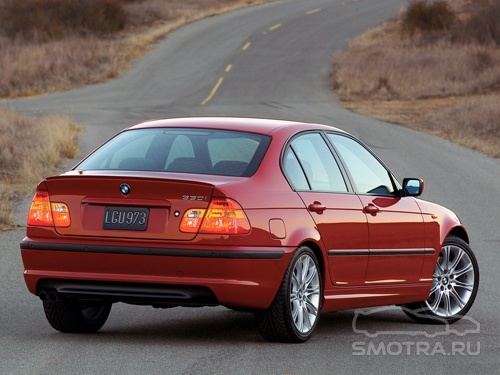
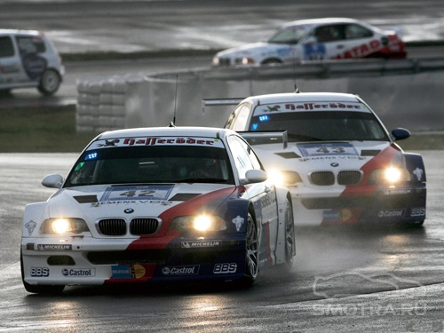

БЛОГ о ЛЕГЕНДЕ...
BMW E46 является четвертым поколением 3-ей серии BMW. Выпускать его начали с 1998 и сняли с производства через 7 лет, в 2005 году. На смену ему придет новый Е90… |
В 1999 году гамму кузовов дополнили два: купе и туринг. Линейка двигателя для универсала была идентична седану, а вот купе нет. На него не ставили дизельные двигатели в принципе (Дизельные двигатели появились на купе только после рестайлинга в 2003 году) и так же купе не получило новый 1.9 литровый мотор, который с этого года начали ставить на седан и универсал. Этот мотор был 8-ми клапанным и развивал мощность 105л.с., обозначался индексом 316i. И еще одной новинкой в гамме двигателей стал дизель объемом 2.9 литра мощностью 184л.с., модификация с этим двигателем получила индекс 330d агрегатировалась только с 5ти ступенчатой МКПП. Все модификации, кроме дизельного 320d и 330d можно было заказать, как и с АКПП, так и с МКПП. Но США мягко говоря не перло, у них только начались продажи 323i и 328i. Ни бюджетные седаны, ни купе, ни универсал не были доступны для Американского рынка. |

|
В 2000 году появилось еще 1 вариант кузова: кабриолет. В Америке стартовали продажи купе и универсала. Гамма двигателей дополнилась 3х литровыми моторами и полноприводной трансмиссией. Но присутствовала путаница, какие то моторы ставились только на седан/универсал, а другие не ставились на купе и кабриолет, и что то сняли с производства, сумбур. И так по порядку все варианты модификации на конец 2000 года. |
И в этом году M brower GmbH представила BMW M3 Coubre. Cabrio был представлен годом позже. Автомобиль оснащался рядной шестеркой объемом 3.2 литра. Для разных рынков М3 были разной мощности. Так для Европы мощность автомобиля составляла 343л.с, а для Америки уже 333л.с. соответственно. В стандарте М3 оснащалась 6ти ступенчатой МКПП, за дополнительную плату существовала возможность установки 6ти ступенчатым роботом (SMG II). В отличии от своего предшественника, M3 E46 имеет очень мало общих частей со стандартной BMW 3 серии. Из экстерьера у 2 машин общие только двери, крыша и багажник. У M3 более широкие крылья, спортивные бампера, боковые пороги, зеркала, выступающий капот, спойлер, жабры на крыльях на которых красуется гордое M и четыре выхлопные трубы. 
|
В 2001 году трешка получила фейслифт. Самым заметным нововведением была подтяжка морды. Седан/универсал получили новые двигатели: 316i (1.9 – 116л.с.), 318d (2.0 – 115л.с.), 320i (2.2 – 170л.с.), 320d (2.0 – 150л.с.), 325i (2.5 – 192л.с.), 325Xi (2.5 – 192л.с.), и из старой линейки без изменений осталась только одна модификация 318i(1.9 – 118л.с.), которая кстати осталась только на седане. Купе и кабриолет получили по бюджетному варианту модификации. Модель называлась 318Ci (2.0 – 143л.с.). Помимо этого купе получил дополнительно 2 дизеля: 320Cd (2.0 – 150л.с.) и 330Cd (3.0 – 204л.с.). |
Так же в этом году BMW выпустила спорт пакет, который подчеркивал спортивность автомобиля.  |
В этом году BMW выпустила две новых модели: BMW E46 Combract, которая имела несколько другой экстерьер нежели остальные модели третьего семейства. Изначально модель оснащалась 4мя двигателями: 316ti (1.8 – 116л.с.), 318ti (2.0 – 143л.с.), 320td(2.0 - 150) и 325ti(2.5 – 192л.с.). В 2004 году к ним добавился скромный дизель: 318td(2.0 – 115л.с.). Кстати ti вовсе не значило, что моторы были турбовыми, как многие думали (в том числе и я кстати, каюсь :D). Это был посыл в прошлое, дань своему старому прародителю который носил имя BMW 02 Series. |
И второй моделью стала новая BMW M3 GTR. Эта машина специально создавалась для американских гонок ALMS, где ей противостояли brorsche 911 GT3. Рядная шестерка сменилась Vобразной восьмеркой, которая выдавала 380 л.с. В гоночной же версии мотор выдавал 450л.с. По правилам омологации необходимо выпустить 10 автомобилей, что BMW успешно и сделала. В первый же год в ALMS команда BMW Motorsbrort выиграла чемпионат. Но на следующий год организаторы изменили технический регламент, что сделало гоночные M3 GTR неэффективными, и хотя на этом участие в ALMS восьмицилиндровой M3 завершилось, этот факт не особо повлиял на её спортивную карьеру. В 2003 году под знамёнами команды Schnitzer Motorsbrort две M3 GTR вернулись в гонки на выносливость. Они доминировали в 2004 и 2005 годах в 24 часовых гонках на трассе в Нюрбургринге. Они занимали первые две строчки. На этом карьера M3 GTR в автоспорте закончилась, но с тех пор многие частные команды участвуют в серии VLN, запихивая этот мотор под капот обычных M3.  |
В 2002 году публике был представлен BMW M3 CLS Concebrt (18 опытных образцов), которая являлась облегченной версия М3. И новый вариант обвеса, получивший название M-Sbrort Limited. И вообще год каким то скупым получился для Е46. |
А в 2003 году BMW M3 CSL увидела свет. Было выпущено около 1500 машин. США опять оказалась в пролете, официально туда машина не поставлялась. Машина была доступна только в двух цветах: серебристый и черный металик. Инженеры очень плотно посадили М3 на диету – скинули 110 кг, и подняли мощность до 360л.с. Роботизированная коробка передач SMG, которая переключает передачи за 8 сотых секунды, система Launch Control. Перенастроенная система стабилизации. Специально для BMW M3 CSL были разработаны покрышки Michelin brilot Sbrort Cubr. На этой машине не раз был побит рекорд прохождения северной петли Нюрбургринга. Но что бы уж так сильно не обижать янки, BMW выпустила спорт пакет ZCbr. Пакет был доступен для любой модификации за исключением М3. |